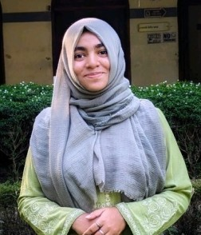

Our Team
The People Behind EIRN
A diverse team of environmental scientists, geospatial analysts, and field researchers committed to data-driven impact.

Shah Israt Azmery
Founder & Lead Researcher
Environmental Science
Obaidur Rahman
GIS & Remote Sensing Lead
Geospatial Analysis
Sadman Ahmed
Environmental Modeler
GIS Modeling

Mushfika Hasan Stuti
Content Developer
Project Management